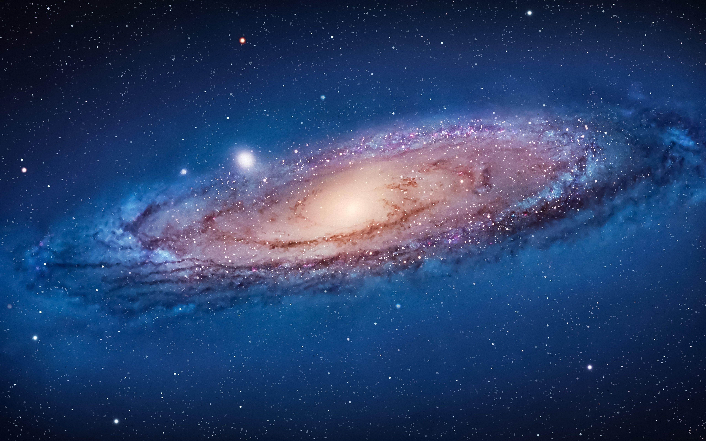
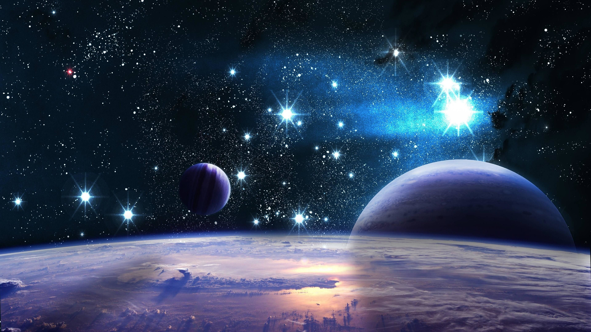

<html>
  <head>
    <script src="https://aframe.io/releases/0.8.0/aframe.min.js"></script>  
    <script>
      AFRAME.registerComponent('set-sky',{
        schema: {default:''},
        init() {
          const sky = document.querySelector('a-sky');
          this.el.addEventListener("click", ()=>{
            console.log("click")
            sky.setAttribute('src', this.data);
          });
        }
      });
      AFRAME.registerComponent('cursor-listener',{  
        init:function(){
          var texture="textures/hdr/TexturesCom_NorwayForest_8K_hdri_sphere_tone.jpg";
          this.el.addEventListener("fusing",function(e){
            console.log("fuse")
            this.setAttribute('material','src',texture);
          });     
        }
      });
    </script> 
  </head>
  <body>
    <a-scene><!--tamaño, distancia, 
      vel. de traslación, vel. de rotación, centro de rotación, texturas-->
      <!--    
      <a-entity id="right view"rotation="0 90 0">
          <a-camera position="0 0 35" wasd-controls="acceleration:1000">
            <a-cursor fuse="true" fuseTimeout="2000" color="#4cc3d9"></a-cursor>
          </a-camera>
        </a-entity>
      <a-entity id="left view" rotation="0 -90 0">
        <a-camera position="0 0 35" wasd-controls="acceleration:1000">
          <a-cursor fuse="true" fuseTimeout="2000" color="#4cc3d9"></a-cursor>
        </a-camera>
      </a-entity>    
       <a-entity id="normal view" rotation="0 0 0">
        <a-camera position="0 0 35" wasd-controls="acceleration:1000">
          <a-cursor fuse="true" fuseTimeout="2000" color="#4cc3d9"></a-cursor>
        </a-camera>
      </a-entity>           
      -->   
      <a-entity id="top view" rotation="-90 0 0">
        <a-camera position="0 0 35" wasd-controls="acceleration:1000">
          <a-cursor fuse="true" fuseTimeout="2000" color="#4cc3d9"></a-cursor>
        </a-camera>
      </a-entity>  
       
<!--  <a-assets>        
         
        
        
      </a-assets> -->
      
      <a-ring position="0 0 0" rotation="-90 0 0" geometry="radiusOuter:3; radiusInner:2.95; segmentsTheta:60" material="color:white"></a-ring>
      <a-ring position="0 0 0" rotation="-90 0 0" geometry="radiusOuter:6; radiusInner:5.95; segmentsTheta:80" material="color:white"></a-ring>
      <a-ring position="0 0 0" rotation="-90 0 0" geometry="radiusOuter:9; radiusInner:8.95; segmentsTheta:100" material="color:white"></a-ring>
      <a-ring position="0 0 0" rotation="-90 0 0" geometry="radiusOuter:12; radiusInner:11.95; segmentsTheta:120" material="color:white"></a-ring>
      <a-ring position="0 0 0" rotation="-90 0 0" geometry="radiusOuter:15; radiusInner:14.95; segmentsTheta:140" material="color:white"></a-ring>
      <a-ring position="0 0 0" rotation="-90 0 0" geometry="radiusOuter:18; radiusInner:17.95; segmentsTheta:160" material="color:white"></a-ring>
      <a-ring position="0 0 0" rotation="-90 0 0" geometry="radiusOuter:21; radiusInner:20.95; segmentsTheta:180" material="color:white"></a-ring>
      <a-ring position="0 0 0" rotation="-90 0 0" geometry="radiusOuter:24; radiusInner:23.95; segmentsTheta:200" material="color:white"></a-ring>
      
      <a-sphere id="Sol" cursor-listener position="0 0 0" geometry="radius:1" material="color:#FFC65D" set-sky="textures/hdr/8527-universo.jpg"></a-sphere>
                
      <a-entity position="0 0 0">      
        <a-sphere id="Mercurio" position="0 0 3" geometry="radius:1" material="color:#d9d9d9" 
        cursor-listener set-sky="textures/hdr/8520-universo.jpg">
          <a-animation atribute="rotation" to="0 7200 0" dur="60000" repeat="indefinite" easing="linear"></a-animation> 
        </a-sphere>      
        <a-animation atribute="rotation" to="0 360 0" dur="3000" repeat="indefinite" easing="linear"></a-animation>  
      </a-entity>
      <a-entity position="0 0 0">
        <a-sphere id="Venus" position="0 0 6" rotation="177.4 0 0" geometry="radius:1" material="color:#ba521a" cursor-listener>
          <a-animation atribute="rotation" to="0 -7200 0" dur="60000" repeat="indefinite" easing="linear"></a-animation>    
        </a-sphere>      
        <a-animation atribute="rotation" to="0 360 0" dur="4000" repeat="indefinite" easing="linear"></a-animation>        
      </a-entity>
      <a-entity position="0 0 0">
        <a-sphere id="Tierra" position="0 0 9" rotation="-23.4 0 0" geometry="radius:1" material="color:#2c4b9a" cursor-listener>
          <a-animation atribute="rotation" to="0 7200 0" dur="60000" repeat="indefinite" easing="linear"></a-animation>
        </a-sphere>      
        <a-animation atribute="rotation" to="0 360 0" dur="5000" repeat="indefinite" easing="linear"></a-animation>        
      </a-entity>
      <a-entity position="0 0 0">
        <a-sphere id="Marte" position="0 0 12" rotation="-25.2 0 0" geometry="radius:1" material="color:#f07459" cursor-listener>
          <a-animation atribute="rotation" to="0 7200 0" dur="60000" repeat="indefinite" easing="linear"></a-animation>
        </a-sphere>      
        <a-animation atribute="rotation" to="0 360 0" dur="6000" repeat="indefinite" easing="linear"></a-animation>        
      </a-entity>
      <a-entity position="0 0 0">
        <a-sphere id="Jupiter" position="0 0 15" rotation="-3.1 0 0" geometry="radius:1" material="color:#95755a" cursor-listener>
          <a-animation atribute="rotation" to="0 7200 0" dur="60000" repeat="indefinite" easing="linear"></a-animation>
        </a-sphere>      
        <a-animation atribute="rotation" to="0 360 0" dur="7000" repeat="indefinite" easing="linear"></a-animation>        
      </a-entity>
      <a-entity position="0 0 0">
        <a-sphere id="Saturno" position="0 0 18" rotation="-26.7 0 0" geometry="radius:1" material="color:#d8c19d" cursor-listener>
          <a-animation atribute="rotation" to="0 7200 0" dur="60000" repeat="indefinite" easing="linear"></a-animation>
        </a-sphere>
        <a-ring position="0 0 18" rotation="-116.7 0 0" geometry="radiusOuter:1.7; radiusInner:1.3; segmentsTheta:60" material="color:white"></a-ring>
        <a-ring position="0 0 18" rotation="63.3 0 0" geometry="radiusOuter:1.7; radiusInner:1.3; segmentsTheta:60" material="color:white"></a-ring>      
        <a-animation atribute="rotation" to="0 360 0" dur="8000" repeat="indefinite" easing="linear"></a-animation>        
      </a-entity>
      <a-entity position="0 0 0">
        <a-sphere id="Urano" position="0 0 21" rotation="97.8 0 0" geometry="radius:1" material="color:#648e9b" cursor-listener>
          <a-animation atribute="rotation" to="0 7200 0" dur="60000" repeat="indefinite" easing="linear"></a-animation>
        </a-sphere>      
        <a-animation atribute="rotation" to="0 360 0" dur="9000" repeat="indefinite" easing="linear"></a-animation>        
      </a-entity>
      <a-entity position="0 0 0"> 
        <a-sphere id="Neptuno" position="0 0 24" rotation="-28.3 0 0" geometry="radius:1" material="color:#30558c" cursor-listener>
          <a-animation atribute="rotation" to="0 7200 0" dur="60000" repeat="indefinite" easing="linear"></a-animation>
        </a-sphere>   
        <a-animation atribute="rotation" to="0 360 0" dur="10000" repeat="indefinite" easing="linear"></a-animation>     
      </a-entity>     
     
       <!-- <a-animation atribute="rotation" to="-45 45 0" dur="3000" repeat="indefinite"></a-animation>
        <a-animation delay="3000" atribute="rotation" from="-45 45 0" to="0 180 0" dur="3000" repeat="indefinite"></a-animation>  
        <a-animation delay="6000" atribute="rotation" from="0 180 0" to="45 315 0" dur="3000" repeat="indefinite"></a-animation>
        <a-animation delay="9000" atribute="rotation" from="45 315 0" to="0 360 0" dur="3000" repeat="indefinite"></a-animation> -->
        
         <!-- gira en torno al elemento que lo contiene: medio giro hacia un lado y medio giro en sentido opuesto  -->
      <!-- <a-entity position="1.77 0 0">
        <a-sphere id="Neptuno" position="0 0.3708259048 24" rotation="0 0 0" radius="1" color="#30558c"></a-sphere>     
        <a-animation atribute="rotation" to="0 180 0" a-delay="3000" dur="3000" repeat="indefinite"></a-animation> 
      </a-entity>   
      <a-entity position="0 0 0" rotation="1.77 0 0">
        <a-sphere id="Neptuno" position="0 -0.3708259048 -24" rotation="0 0 0" radius="1" color="#30558c"></a-sphere> 
        <a-animation atribute="rotation" to="0 180 0" delay="6000" dur="3000" repeat="indefinite"></a-animation>     
      </a-entity>     -->
      <a-sky></a-sky>
    </a-scene>
  </body>
</html>